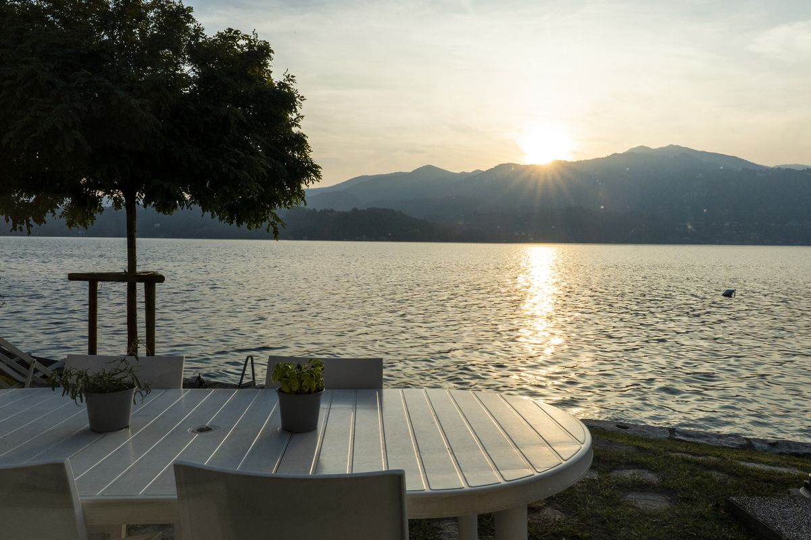

Stellen Sie sich vor, Sie erwachen in einer modernen Villa am Seeufer, nur wenige Meter vom Wasser des Ortasees entfernt, verbringen den Tag mit Schwimmen und Entspannen und gehen dann einen Kilometer zu Fuß zum Abendessen in die Villa Crespi. Dies ist ein erreichbares Luxus-Erlebnis, das Komfort mit kulinarischer Auszeichnung verbindet.
Küchenchef Antonino Cannavacciuolo
Küchenchef Antonino Cannavacciuolo ist ein kulinarischer Künstler und eine Fernsehpersönlichkeit, der die historische Villa Crespi in ein gastronomisches Ziel verwandelt hat, das mit drei Michelin-Sternen ausgezeichnet wurde – eine Auszeichnung, die weltweit weniger als 150 Häuser tragen. Die Beschreibung des Guide Michelin hebt eine „außergewöhnliche Küche, eine Reise wert" hervor.
Der maurische Palast
Die Villa selbst befindet sich in einem 1879 errichteten Palast im maurischen Stil mit einem markanten Minarett-Turm und aufwendig gestalteten, islamisch inspirierten Innenräumen mit filigranen Mosaiken und geschnitzten Holzdetails.

Das Degustationsmenü
Das charakteristische Degustationsmenü mit dem Titel „Mettici l'Anima" (Leg deine Seele hinein) verbindet neapolitanische Wurzeln mit piemontesischen Traditionen. Zu den angebotenen Gerichten zählen Taube mit Leber und Ananas in Verjus-Sauce, Nierenzubereitungen, Seefisch und neapolitanisch inspirierte Kreationen. Jeder Gang bringt kräftige Aromen mit Raffinesse in Einklang und vereint klassische Techniken mit moderner Kreativität.
Die perfekte Kombination
Die Kombination aus Villa Volpe und Villa Crespi bietet ein besseres Preis-Leistungs-Verhältnis als Luxushotels und ermöglicht zugleich den Zugang zu einer privaten Villa, zum Schwimmen, zu atemberaubenden Ausblicken und zu einem erstklassigen kulinarischen Erlebnis. Schlafen in der Villa Volpe, speisen in der Villa Crespi – das ultimative Ortasee-Erlebnis.
Für die übrigen Abende stellt unser Ratgeber Essen am Ortasee die anderen Sterne-Restaurants, die Trattorien und die Weinbars vor.